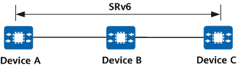

Overview of SRv6 SID Ping and Tracert
On an SRv6 network, the control plane for SRv6 tunnel establishment cannot detect failures of data forwarding over SRv6, making network maintenance difficult. To address this, SRv6 SID ping and tracert can be used to detect such failures and quickly locate faulty nodes. Both SRv6 SID ping and tracert check network connectivity and host reachability, but only SRv6 SID tracert can locate network faults.
SRv6 SID Ping
On the network shown in Figure 1, Device A, Device B, and Device C are SRv6-capable, and an SRv6 path is established between Device A and Device C.
Figure 1 SRv6 SID ping and tracert
The following describes how a ping test is initiated on Device A for the SRv6 path.
- A segment-by-segment test is implemented using the SRH O-bit in the SRv6 OAM protocol extension.
- To initiate a ping operation from Device A to Device C, specify an SRv6 SID (an End SID or an End.X SID) for Device B and an End SID for Device C on Device A. Device A then constructs and sends an ICMPv6 Echo Request message.
- After receiving the ICMPv6 Echo Request message, Device B sends an ICMPv6 Echo Reply message to Device A and forwards the ICMPv6 Echo Request message to Device C.
- If SRv6 is enabled on Device B, Device B forwards the ICMPv6 Echo Request message based on the SRH.
- If SRv6 is disabled on Device B, Device B forwards the ICMPv6 Echo Request message based on a route.
- After receiving the ICMPv6 Echo Request message, Device C sends an ICMPv6 Echo Reply message to Device A.
- If an End.OP SID in the SRv6 OAM protocol extension is used to implement a non-segment-by-segment test, the End.OP SID must be configured on Device C.
- To initiate a ping operation from Device A to Device C, specify an End.OP SID and an End SID for Device C on Device A. Device A then constructs and sends an ICMPv6 Echo Request message.
- After receiving the ICMPv6 Echo Request message, Device B forwards the message to Device C.
- If SRv6 is enabled on Device B, Device B forwards the ICMPv6 Echo Request message based on the SRH.
- If SRv6 is disabled on Device B, Device B forwards the ICMPv6 Echo Request message based on a route.
- After receiving the ICMPv6 Echo Request message, Device C determines that the SID type is End.OP SID and checks whether the next-layer SID is Device C's End SID.
- If the next-layer SID is Device C's End SID, the check succeeds. Device C then sends an ICMPv6 Echo Reply message to Device A. In this case, you can view detailed information about the ping operation on Device A.
- If the next-layer SID is not Device C's End SID, the check fails. Device C then discards the ICMPv6 Echo Request message. In this case, a message is displayed on Device A, indicating that the ping operation times out.
If an End SID is used to implement a test:
- To initiate a ping operation from Device A to Device C, specify an End SID for Device C on Device A. Device A then constructs and sends an ICMPv6 Echo Request message.
- After receiving the ICMPv6 Echo Request message, Device B forwards the message to Device C.
- If SRv6 is enabled on Device B, Device B forwards the ICMPv6 Echo Request message based on the SRH.
- If SRv6 is disabled on Device B, Device B forwards the ICMPv6 Echo Request message based on a route.
- After receiving the ICMPv6 Echo Request message, Device C determines that the SID type is End SID and checks whether the upper-layer protocol header is ICMPv6.
- If the upper-layer protocol header is ICMPv6, the check succeeds. Device C then sends an ICMPv6 Echo Reply message to Device A. In this case, you can view detailed information about the ping operation on Device A.
- If the upper-layer protocol header is not ICMPv6, the check fails. Device C then discards the ICMPv6 Echo Request message. In this case, a message is displayed on Device A, indicating that the ping operation times out.
SRv6 SID Tracert
The following describes how a tracert test is initiated on Device A for the SRv6 path, as shown in Figure 1.
- An overlay test is implemented using the SRH O-bit in the SRv6 OAM protocol extension.
- To initiate a tracert operation from Device A to Device C, specify an SRv6 SID (an End SID or an End.X SID) for Device B and an End SID for Device C on Device A. Device A then constructs a UDP packet, encapsulates the packet with an SRH, and sends the packet. In this case, the value of the Hop Limit field (equal to the TTL field of IPv4) in the IPv6 packet header is set to 64 and decrements by 1 each time the packet passes through a device. When the value of this field reaches 0, the packet is discarded, and an ICMPv6 Time Exceeded message is sent to Device A.
- After receiving the UDP packet, Device B changes the value of the Hop Limit field to 63, sends an ICMPv6 Port Unreachable message to Device A, and forwards the UDP packet to Device C.
- If SRv6 is enabled on Device B, Device B forwards the UDP packet based on the SRH.
- If SRv6 is disabled on Device B, Device B forwards the UDP packet based on a route.
- After receiving the UDP packet, Device C changes the value of the Hop Limit field to 62 and sends an ICMPv6 Port Unreachable message to Device A.
- If an End.OP SID in the SRv6 OAM protocol extension is used to implement a non-overlay test, the End.OP SID must be configured on Device C.
- To initiate a tracert operation from Device A to Device C, specify an SRv6 SID (an End SID or an End.X SID) for Device B and SIDs (an End.OP SID and an End SID) for Device C on Device A. Device A then constructs a UDP packet, encapsulates the packet with an SRH, and sends the packet. In this case, the value of the Hop Limit field in the IPv6 packet header is set to 1 and decrements by 1 each time the packet passes through a device. When the value of this field reaches 0, the packet is discarded, and an ICMPv6 Time Exceeded message is sent to Device A.
- After receiving the UDP packet, Device B changes the value of the Hop Limit field to 0 and sends an ICMPv6 Time Exceeded message to Device A.
- After receiving the ICMPv6 Time Exceeded message from Device B, Device A increments the value of the Hop Limit field by 1 (the value now becomes 2) and continues to send the UDP packet.
- After receiving the UDP packet, Device B changes the value of the Hop Limit field to 1 and forwards the packet to Device C.
- If SRv6 is enabled on Device B, Device B forwards the UDP packet based on the SRH.
- If SRv6 is disabled on Device B, Device B forwards the UDP packet based on a route.
- After receiving the UDP packet, Device C changes the value of the Hop Limit field to 0, determines that the SID type is End.OP SID, and checks whether the next-layer SID is Device C's End SID.
- If the next-layer SID is Device C's End SID, the check succeeds. Device C then sends an ICMPv6 Port Unreachable message to Device A. In this case, you can view detailed information about the tracert operation on Device A.
- If the next-layer SID is not Device C's End SID, the check fails. Device C then discards the UDP packet. In this case, a message is displayed on Device A, indicating that the tracert operation times out.
If an End SID is used to implement a test:
- To initiate a tracert operation from Device A to Device C, specify an SRv6 SID (an End SID or an End.X SID) for Device B and an End SID for Device C on Device A. Device A then constructs a UDP packet, encapsulates the packet with an SRH, and sends the packet. In this case, the value of the Hop Limit field in the IPv6 packet header is set to 1 and decrements by 1 each time the packet passes through a device. When the value of this field reaches 0, the packet is discarded, and an ICMPv6 Time Exceeded message is sent to Device A.
- After receiving the UDP packet, Device B changes the value of the Hop Limit field to 0 and sends an ICMPv6 Time Exceeded message to Device A.
- After receiving the ICMPv6 Time Exceeded message from Device B, Device A increments the value of the Hop Limit field by 1 (the value now becomes 2) and continues to send the UDP packet.
- After receiving the UDP packet, Device B changes the value of the Hop Limit field to 1 and forwards the packet to Device C.
- If SRv6 is enabled on Device B, Device B forwards the UDP packet based on the SRH.
- If SRv6 is disabled on Device B, Device B forwards the UDP packet based on a route.
- After receiving the UDP packet, Device C changes the value of the Hop Limit field to 0, determines that the SID type is End SID, and checks whether the upper-layer protocol header is UDP.
- If the upper-layer protocol header is UDP, the check succeeds. Device C then sends an ICMPv6 Port Unreachable message to Device A. In this case, you can view detailed information about the tracert operation on Device A.
- If the upper-layer protocol header is not UDP, the check fails. Device C then discards the UDP packet. In this case, a message is displayed on Device A, indicating that the tracert operation times out.